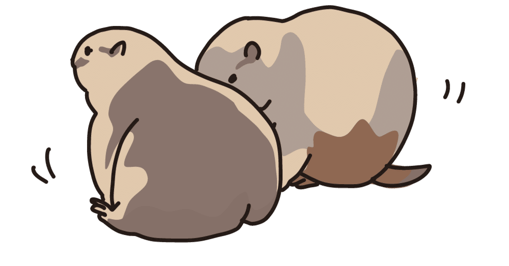

人生の諸先輩方に「たかがそれしきの年齢で」と言われてしまうかもしれないが、今日だけは許してほしい。
30年も生きていると、ウソのような、または信じがたい出来事に遭遇することが一度や二度あったりする。
とっても普通に見える僕の人生にも、そんなことが何度かあった。今まで胸の内に秘めていたのだが、ある時「別に隠し持つ必要もないな」と思ったので、ここで一つだけ語らせてほしい。
あれは2年前の年末。
あの日、僕は残業が続き疲れ切った体を何とか電車まで運んでいた。ようやく迎えた金曜日の夜のことだ。
車内で席を確保するものの、スマートフォンを見る体力もなくすぐにウトウトし始めた。そして、数分後には浅い眠りについたのだが……。
ぱっと目を覚まし、「寝過ごした！」と瞬間的に思った。
が、よくよく考えてみると、僕の目的地、つまり自宅の最寄り駅は終点であることを思い出し、少し安堵した様子で再び目を瞑ろうとする……が、その時僕は初めて右肩に少し重みを感じることに気がついた。
恐る恐る横目で見ると、隣に座る若い女性が僕の肩に頭を寄せて眠っているらしい。
なんだ、よくある光景だ。これがおっさんだったらムッ！としてしまうが、女性であるなら仕方がない。
そんなどうしようもないサガを引っ提げて、「僕の肩でよければ、ぐっすりお眠り^^」とにんまり思っていたのだが……なにか様子がおかしい。
眠っているのであれば、本来静止していなければならないその女性の左手には起動されたスマートフォン。そして、右手は慣れた手つきでその画面をタッチしたりスクロールしたりしている。
えっ？ どういうこと？
一瞬パニくる頭。彼女が起きているのかどうか顔を覗き込むわけにもいかず、複雑な心境で目を瞑る。
落ち着け！ 見間違いか？ いや、待て！ 結論を出すには早計だ！
普段はぐーたらしている頭の中で、緊急会議を開催せざるを得なくなった僕の分身たちが続々と意見を述べていく。
そして、しばしの議論の後、僕たち(といっても、全員僕自身だけど)はある解を導いた。
隣の人、眠ってないのに僕の右肩を枕代わりにツムツムしてない？
おっと説明が不足していたようだ。
ツムツムとは、メッセージアプリのLINEが提供するスマートフォン向けアプリゲームである。ディズニーキャラクターがデフォルメされた「ツム」を消すパズルゲームで、2022年時点でユーザー数が約670万人もおり……かくがくしかじか。
いや、この際そんなことはどうでもいい。
えっ？ 眠ってないのに、右肩(あるいは左肩)を偶然電車で隣に座った人に貸すことなんてあるの！？
『常識とは 18 歳までに身につけた偏見のコレクションでしかない』
これは、あの相対性理論で有名な物理学者アルベルト・アインシュタインが残した言葉である。
とっさに僕は偉大すぎる彼の名言が頭に浮かんだ。まさかそんな名言を、こんな状況になって思い出すとは露にも思わなかったが。
……ツムツムって、首を横にしていた方が捗るのだろうか。
素朴な疑問が浮上する。
僕はスマートフォン向けゲームをほとんどやったことがないので完全なる想像になってしまうが、きっとゲーマーにとっては当たり前のことなのだろう。
それにしても、慣れた手つきだったな。
あんなにたくさんのツムを消せて、さぞかし気持ちがいいだろうな。いーな、僕もやってみたいな。
そんな悠長なことを思えるのは今だからだ。もう2年も経っているから。
あの時は状況を理解するのに困難を極め、やがて状況を理解できても相手の意図が全く分からなかった。
いや多分彼女も、年末に向けて「今年のうちに残っている仕事のカタつけたるで！」といった勢いで仕事をしたせいで疲れ切っていたところ、帰りの電車で偶然見かけたアホ面の僕の寝顔を見て「こいつ寝てるし、枕代わりにしたろ^^」くらいの考えなのだから、きっと意図なんかないのだ。
……と思い込もうとするまで非常に時間がかかった。
いや、待て！ やはり見間違いという可能性もあるぞ！ もう一度だけ確かめてみるべきだ！
勇気ある、僕の分身の一人が言った。
ほかの僕の分身たちはあまり気乗りしていなかったが、言われてみれば確かにそうだ。
現に僕は一度しかその瞬間を見ていないし、簡単な話、僕も疲れているせいで幻影を見てしまっているのかもしれない。
いかにも空想や妄想が大好きな僕のしでかしそうなことだ。彼女にあらぬ冤罪をかけてしまっていることだって十分あり得る。
そして、僕は分身たちの応援もあって、意を決して一瞬目を見開いた。
「頼む！眠っていてくれ！(というか、きっと眠ってるよね？(震え))」
そう願いながら、目を開けたのだ！
そして、僕の視界に移り込んだのは、彼女のスマホ画面のツムが一斉に消えて彼女がにやけている顔だった。
厳密にいうと顔は見えていないのだが、それは後ろ姿で分かった。あっ今、「よっしゃ」って思ったやろ。心の中のガッツポーズ、ばっちり見えてるで。
心の中を渦巻いていたそれまでの熱量が急激に冷めていき、やむなくして、僕は終点の一駅前で下車した。
なるべく自然に起きたふりをして、僕は右肩をゆっくり彼女から切り離した。すると、彼女は少し驚いた様子を見せたが、僕の方へ顔を向けることもなく、すっと姿勢を正した。
できるやん！！ 普通の姿勢でも！！ ツムツムーー！！！
以上が未だに覚えている不思議な体験だ。
あの後、一駅分、時間にして20分ほど多めに歩いた帰り道でずっと考えていたけれど、結局消化できなかった。
本当になんだったんだろう。
別に嫌な記憶とかではないのだけれど、今後もなさそうな体験だったので、このたびネタにさせてもらいました。
あっ最後に一つ。
そんなにツムツムが捗るのなら、いつでも肩貸すよー！(タイトルの伏線回収)